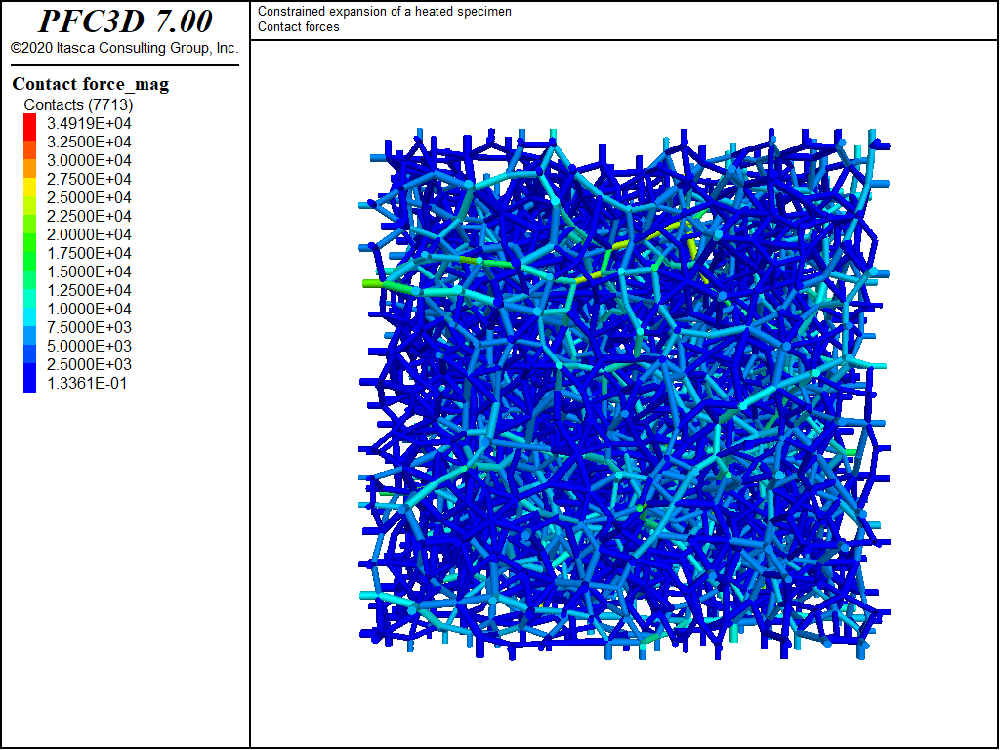
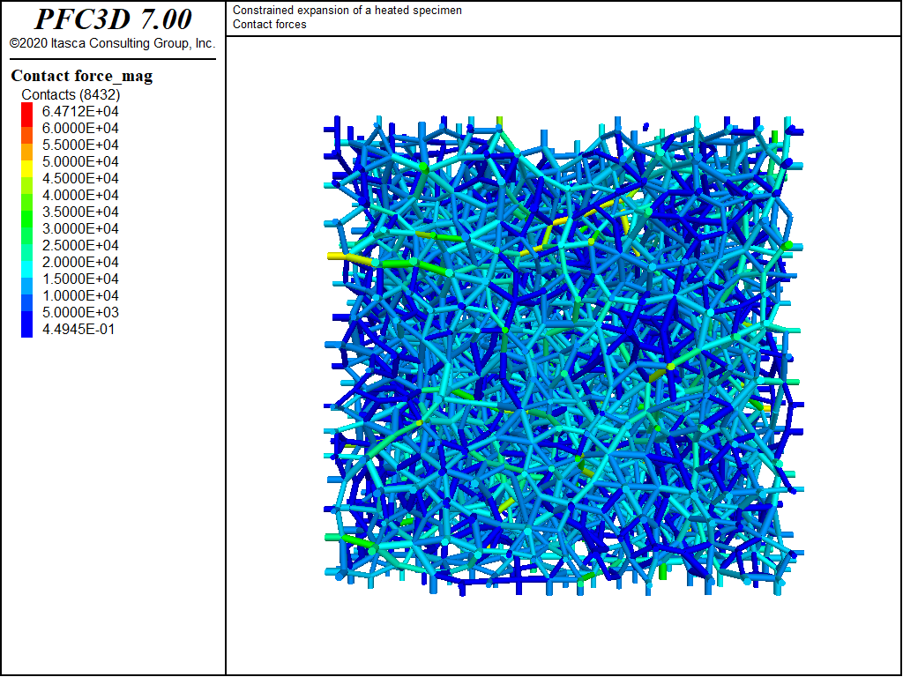

边界固定的受热试样
注意
本算例的项目文件可在 PFC 中查看或运行。[1]所用的数据文件（data files）列于本算例末尾。
对边界受约束的立方体试样施加温度增量 \(\Delta T\)。周围六面墙固定，以约束试样膨胀；测量热致应力并与解析值比较。
解析值
含热致应变的应力—应变关系由式 (1) 给出（[Timoshenko1970a]）：
其中 \(E\) 和 \(\nu\) 分别为杨氏模量和泊松比。此外，\(\alpha_t\) 为线热膨胀系数。
各向同性试样的热致应力解析值由式 (2) 给出，即将 \(\sigma_x=\sigma_y=\sigma_z\) 和 \(\epsilon_x=\epsilon_y=\epsilon_z=0\) 代入式 (1)：
模型与结果
本例使用文件“constrained_expansion.dat”。创建尺寸为 2 × 2 × 2 m 的试样，包含约 4000 个尺寸均匀分布的球颗粒（半径范围 0.05 至 0.08 m），孔隙率为 0.38。试样生成并在 100 kPa 各向同性应力状态下平衡后，在球颗粒—球颗粒接触上安装接触黏结。
应力和应变使用位于试样中心、半径为 0.95 m 的测量球测量，同时也在边界墙上测量应力。在 PFC 中，颗粒热膨胀系数与线热膨胀系数相同：本例中 \(\alpha_t\) = 3 × 10-6/°C。
热学各向同性约束膨胀期间在边界墙上测得的应力增量为：


图 1：热学各向同性约束膨胀前的接触力。


图 2：热学各向同性约束膨胀后的接触力。
为评估解析解，通过在 100 kPa 侧向围压下对试样进行有侧限压缩试验，计算杨氏模量 \(E\) 和泊松比 \(\nu\)。
将这些值代入式 (2) 得到：
该值与 (3) 中报告的实测应力增量吻合良好。差异可能源于试样并非完全均匀；随机堆积使材料微观结构产生非均质性。
参考文献
| [Timoshenko1970a] | Timoshenko, S. P. 和 J. N. Goodier。《弹性理论》（第 3 版）。纽约：McGraw-Hill，1970。 |
数据文件
constrained_expansion.dat
; 文件名：constrained_expansion.dat (3D)
;
; Itasca Consulting Group, Inc.
; ========================================================================
; 热学选项验证问题：
; 受热试样的约束膨胀
;
; ========================================================================
program log-file 'constrained_expansion.log'
program log on
; ========================================================================
model new
model large-strain on
model title 'Constrained expansion of a heated specimen'
; -------------------- 构建试样 ------------------------------------
model domain extent -5 5
contact cmat default model linearcbond ...
method deformability emod 3.0e9 kratio 1.0
wall generate box -1 1
model random 10001
ball distribute resolution 1.0 ...
porosity 0.38 ...
radius 0.05 0.08 ...
box -1 1
ball attribute density 2500.0 damp 0.7
model cycle 2000 calm 100
model mechanical timestep scale
model solve
ball property 'fric' 0.5
ball attribute displacement multiply 0.0
model cycle 1000
model mechanical timestep auto
model solve
model save 'initial'
; --------------- 施加各向同性应力 ---------------------------------
model restore 'initial'
program echo off
program call 'triaxial_utils.p3fis'
program echo on
; 扩张墙体
[expand_walls(1.25)]
; 安装量测球并激活应变计算
measure create id 1 radius 0.95
[ini_measure]
fish callback add accumulate_mstrains 11.0
; 激活墙体伺服控制
[tsa = -1.0e5]
[tsl = -1.0e5]
[do_zservo = true]
fish callback add servo_walls 1.0
[tol = 5e-3]
[gain_cnt = 0]
[gain_update_freq = 100]
[gain_safety_fac = 0.1]
fish define stop_me
gain_cnt = gain_cnt + 1
if gain_cnt >= gain_update_freq then
compute_gain(gain_safety_fac)
gain_cnt = 0
endif
if math.abs((swxx - tsl)/tsl) > tol
exit
endif
if math.abs((swyy- tsl)/tsl) > tol
exit
endif
if math.abs((swzz - tsa)/tsa) > tol
exit
endif
if mech.solve("ratio-average") > 1e-4
exit
endif
stop_me = 1
end
[wlx0 = wlx]
[wly0 = wly]
[wlz0 = wlz]
[swxx0 = swxx]
[swyy0 = swyy]
[swzz0 = swzz]
[smxx0 = smxx]
[smyy0 = smyy]
[smzz0 = smzz]
fish history emxx
fish history emyy
fish history emzz
fish history ewxx
fish history ewyy
fish history ewzz
fish history smxx
fish history smyy
fish history smzz
fish history swxx
fish history swyy
fish history swzz
model history name "100" mechanical ratio-average
[compute_gain(0.1)]
model solve fish-halt stop_me
; 对活动的球-球接触施加黏结
contact method bond gap 0.0 range contact type "ball-ball"
contact property cb_tenf 1e20 cb_shearf 1e20 range contact type "ball-ball"
model save 'iso'
;-------------- 估算杨氏模量与泊松比 -----------------
model restore 'iso'
model calm
ball attribute displacement multiply 0.0
[do_zservo = false]
[wlx0 = wlx]
[wly0 = wly]
[wlz0 = wlz]
wall attribute vel-z 0.0001 range id 1
wall attribute vel-z -0.0001 range id 2
[gain_cnt = 0]
[compute_gain(0.5)]
[gain_safety_fac = 0.5]
fish define stop_me2
gain_cnt = gain_cnt + 1
if gain_cnt >= gain_update_freq then
compute_gain(gain_safety_fac)
gain_cnt = 0
endif
if ewzz <= -1e-4 then
stop_me2 = 1
endif
end
[ini_measure]
[smxx0 = smxx]
[smyy0 = smyy]
[smzz0 = smzz]
[swxx0 = swxx]
[swyy0 = swyy]
[swzz0 = swzz]
history delete
;set display fish ewzz
model solve fish-halt stop_me2
fish define compute_deformability
local stress = measure.stress(mp)
global ymodm = (smzz - smzz0) / emzz
global pratm = - 0.5*(emxx + emyy) / emzz
;
global ymodw = (swzz - swzz0) / ewzz
global pratw = - 0.5*(ewxx + ewyy) / ewzz
end
[compute_deformability]
model save 'aniso'
;---------------- 固定墙体并施加 +100 deg C -------------------------
model restore 'iso'
fish callback remove servo_walls 1.0
model calm
ball attribute displacement multiply 0.0
wall attribute velocity multiply 0.0
[ini_measure]
[swxx0 = swxx]
[swyy0 = swyy]
[swzz0 = swzz]
[smxx0 = smxx]
[smyy0 = smyy]
[smzz0 = smzz]
history delete
model configure thermal
ball thermal attribute expansion 3.0e-6
ball thermal attribute specific-heat 1.0e3
ball thermal attribute temperature 0.0
ball thermal attribute temperature-increment=100.0
model cycle 1
model thermal off mechanical on
model cycle 1000
model solve
fish define compute_dsig
global dsmxx = smxx - smxx0
global dsmyy = smyy - smyy0
global dsmzz = smzz - smzz0
global dswxx = swxx - swxx0
global dswyy = swyy - swyy0
global dswzz = swzz - swzz0
end
[compute_dsig]
model save 'final'
program log off
program return
; ========================================================================
; 文件结束：constrained_expansion.dat (3D)
尾注
| [1] | 要在 PFC 中查看本项目，请使用程序菜单。
⮡ PFC |
| 这些内容对您有帮助吗？… | FLAC3D © 2019, Itasca | 原文更新于 2020 年 10 月 8 日 |